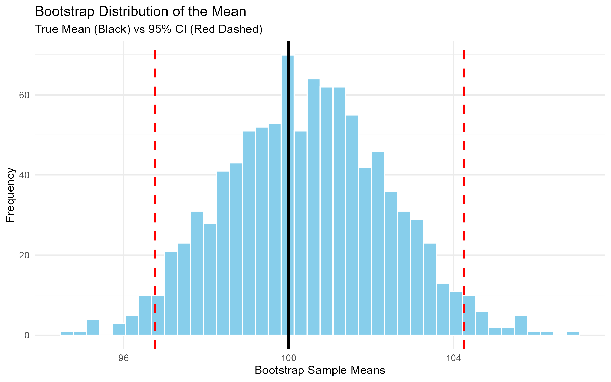
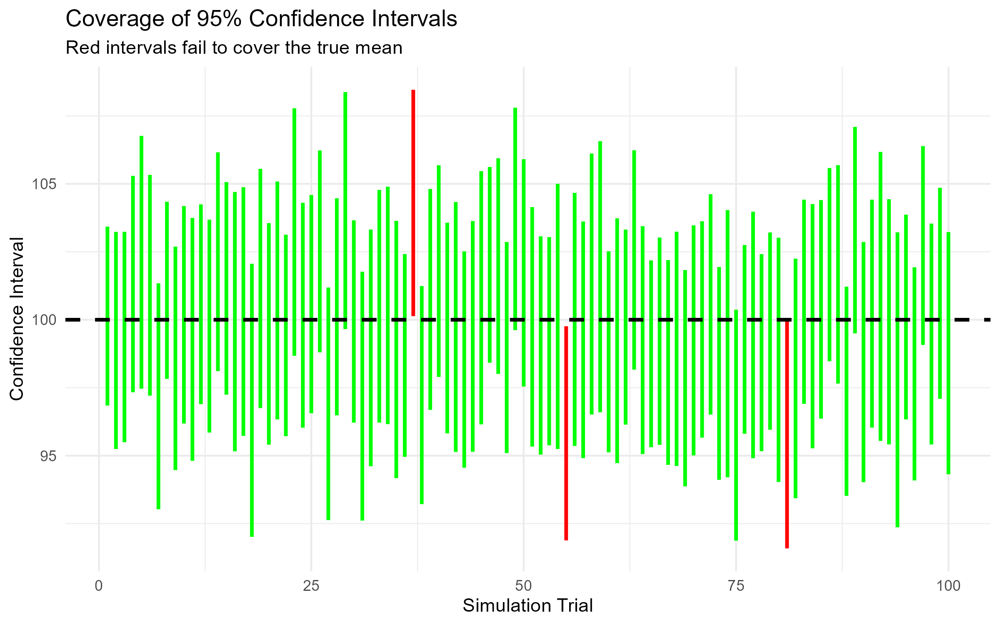
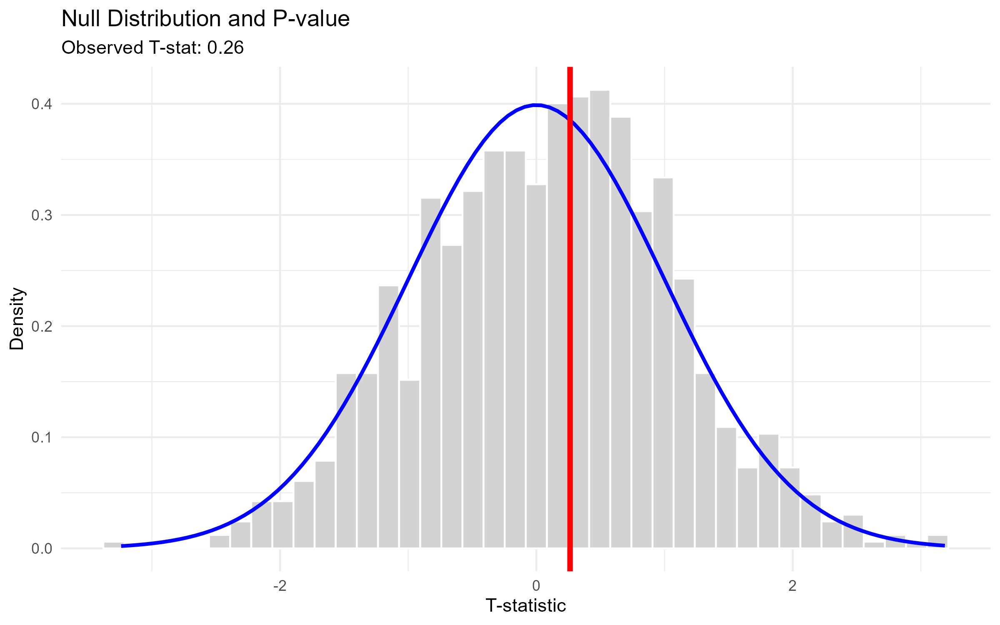

Blog8: Simulation and Statistical Inference
Introduction
Statistical inference is the process of drawing conclusions about a population based on a sample. But how do we know how much confidence to place in those conclusions?
Formulas like standard errors and p-values are powerful, but they often feel like magic black boxes. To truly understand them, this post uses Monte Carlo simulation to visualize three foundational concepts in statistics: 1. How a Bootstrap Confidence Interval is constructed. 2. What it actually means for a 95% Confidence Interval to have 95% coverage. 3. How Hypothesis Testing and p-values work by simulating a null distribution.
To make these concepts intuitive, I built an interactive Shiny App in R. The complete code is provided at the end of this post.
The Setup: A Known Population
To verify our statistical methods, we first need a “truth.” The simulation below assumes a population that follows a normal distribution with a true mean ((= 100)) and a standard deviation ((= 15)).
The goal of inference is to see if we can recover (= 100) using only a small sample.
Part 1: The Bootstrap Confidence Interval
If we don’t know the theoretical distribution of our data, how do we calculate a confidence interval? We use the Bootstrap.
The logic is simple: if the sample is a good representation of the population, we can treat the sample as the population. We draw thousands of “resamples” from our original sample (with replacement) and calculate the mean of each resample.
The interactive chart below shows the distribution of 1,000 bootstrap means drawn from a single sample of size (n=50).

How to read the chart: - The black solid line is the true population mean ((= 100)). - The light blue histogram is the distribution of our 1,000 resampled means. - The red dashed lines represent the 95% Confidence Interval. We find these by taking the 2.5th and 97.5th percentiles of the bootstrap distribution.
In the Shiny App, you can change the Confidence Level to 80% (the red lines will move closer together) or increase the number of simulations (the histogram will become smoother).
Part 2: What does “95% Confidence” actually mean?
Many people mistakenly believe that a 95% confidence interval means “there is a 95% chance that the true mean is inside this specific interval.” This is mathematically incorrect.
The true meaning of frequentist confidence is about long-run coverage. If we repeated our experiment 100 times, drew 100 different samples, and calculated 100 different confidence intervals, we would expect about 95 of those intervals to contain the true mean.
The chart below simulates exactly this. It runs 100 different trials, each with its own sample and confidence interval.

How to read the chart: - Each horizontal line represents one experiment. - Green lines are intervals that successfully captured the true mean (100). - Red lines are the “failures” — intervals that missed the true mean. - The dashed black line is the true mean.
Because we are using a 95% confidence level, exactly 95 of the lines should be green, and 5 should be red. In the Shiny App, you can change the Confidence Level to 80%; you will immediately see more red lines (20 out of 100).
Part 3: Hypothesis Testing and P-values
Finally, let’s look at hypothesis testing. Suppose our null hypothesis is (H_0: = 100). We want to know if our sample provides enough evidence to reject (H_0).
To do this, we simulate the Null Distribution. We generate thousands of fake datasets assuming the null hypothesis is true (i.e., (= 100)), calculate a T-statistic for each, and plot the resulting distribution.

How to read the chart: - The light gray histogram is the distribution of T-statistics under the null hypothesis. - The red vertical line is the T-statistic we actually observed from our sample. - The p-value is the probability of getting a T-statistic as extreme as our red line, assuming the null hypothesis is true. Visually, it is the area under the curve to the right of the red line.
If the red line is far into the tail of the distribution, the p-value is small, and we reject the null hypothesis.
Conclusion
Simulation strips away the mystery of statistical inference.
- Bootstrap shows us how to construct confidence intervals without assuming a theoretical distribution.
- Coverage simulations prove that a 95% confidence interval is a property of the procedure, not a single interval.
- Null distributions make p-values visual, showing exactly how rare our observed data would be if the null hypothesis were true.
Appendix: Interactive Shiny App Code
Below is the complete R code for the interactive Shiny application. If you have R installed, you can run this code locally to explore how changing the sample size, number of simulations, and confidence level affects the results.
library(shiny)
library(plotly)
library(tidyverse)
ui <- fluidPage(
titlePanel("Interactive Statistical Inference Demo"),
sidebarLayout(
sidebarPanel(
sliderInput("n", "Sample Size (n):", min = 10, max = 200, value = 50),
sliderInput("sims", "Number of Bootstrap Simulations:", min = 100, max = 2000, value = 1000, step = 100),
sliderInput("conf", "Confidence Level:", min = 0.80, max = 0.99, value = 0.95, step = 0.01),
actionButton("resample", "Draw New Sample")
),
mainPanel(
tabsetPanel(
tabPanel("1. Bootstrap Distribution", plotlyOutput("boot_plot")),
tabPanel("2. CI Coverage (Simulations)", plotlyOutput("coverage_plot")),
tabPanel("3. Hypothesis Testing", plotlyOutput("test_plot"))
)
)
)
)
server <- function(input, output, session) {
true_mean <- 100
true_sd <- 15
sample_data <- eventReactive(input$resample, {
rnorm(input$n, mean = true_mean, sd = true_sd)
}, ignoreNULL = FALSE)
output$boot_plot <- renderPlotly({
data <- sample_data()
boot_means <- replicate(input$sims, mean(sample(data, replace = TRUE)))
alpha <- (1 - input$conf) / 2
ci <- quantile(boot_means, probs = c(alpha, 1 - alpha))
df <- data.frame(boot_means = boot_means)
p <- ggplot(df, aes(x = boot_means)) +
geom_histogram(bins = 40, fill = "skyblue", color = "white") +
geom_vline(xintercept = ci[1], color = "red", linetype = "dashed", size = 1) +
geom_vline(xintercept = ci[2], color = "red", linetype = "dashed", size = 1) +
geom_vline(xintercept = true_mean, color = "black", size = 1.5) +
labs(title = "Bootstrap Distribution of the Mean",
subtitle = paste("True Mean vs ", input$conf*100, "% CI"),
x = "Bootstrap Sample Means", y = "Frequency") +
theme_minimal()
ggplotly(p)
})
output$coverage_plot <- renderPlotly({
trials <- 100
ci_df <- data.frame(trial = 1:trials, lower = numeric(trials), upper = numeric(trials), covers = logical(trials))
alpha <- (1 - input$conf) / 2
for(i in 1:trials) {
x <- rnorm(input$n, mean = true_mean, sd = true_sd)
m <- mean(x)
se <- sd(x) / sqrt(input$n)
z <- qnorm(1 - alpha)
ci_df$lower[i] <- m - z * se
ci_df$upper[i] <- m + z * se
ci_df$covers[i] <- (true_mean >= ci_df$lower[i]) & (true_mean <= ci_df$upper[i])
}
p <- ggplot(ci_df, aes(x = trial, ymin = lower, ymax = upper, color = covers)) +
geom_linerange(size = 1) +
geom_hline(yintercept = true_mean, linetype = "dashed", color = "black", size = 1) +
scale_color_manual(values = c("TRUE" = "green", "FALSE" = "red"), guide = "none") +
labs(title = "Coverage of Confidence Intervals",
x = "Simulation Trial", y = "Confidence Interval") +
theme_minimal()
ggplotly(p)
})
output$test_plot <- renderPlotly({
x <- sample_data()
obs_t <- (mean(x) - true_mean) / (sd(x) / sqrt(input$n))
null_t <- replicate(input$sims, {
x_null <- rnorm(input$n, mean = true_mean, sd = true_sd)
(mean(x_null) - true_mean) / (sd(x_null) / sqrt(input$n))
})
df <- data.frame(null_t = null_t)
p <- ggplot(df, aes(x = null_t)) +
geom_histogram(bins = 40, fill = "lightgray", color = "white", aes(y = ..density..)) +
stat_function(fun = dnorm, color = "blue", size = 1) +
geom_vline(xintercept = obs_t, color = "red", size = 1.5) +
labs(title = "Null Distribution and P-value",
x = "T-statistic", y = "Density") +
theme_minimal()
ggplotly(p)
})
}
shinyApp(ui, server)